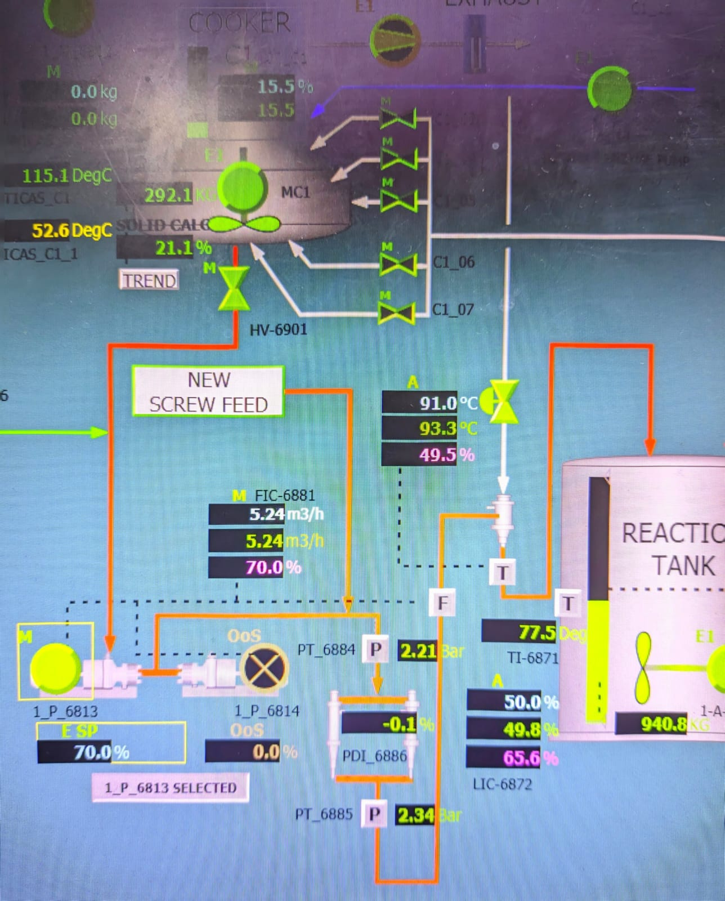
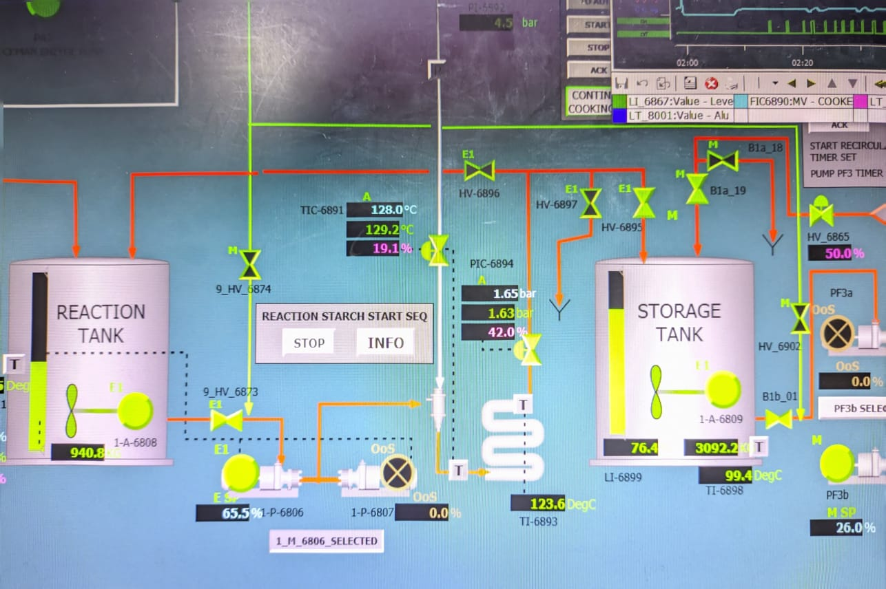

Reaktor Starch – Proses Pemanasan & Reaksi
Tahapan ini merupakan inti dari proses Starch Preparation, di mana slurry starch yang telah dicampur akan dimasak menggunakan pemanas untuk mengubah sifat fisiknya. Proses ini penting untuk menghasilkan viskositas dan reaktivitas yang sesuai dengan kebutuhan produksi.
Sistem DCS memungkinkan operator memantau suhu reaktor, waktu tinggal, laju alir masuk, serta pengaturan otomatis pompa dan kontrol suhu. Berikut adalah tampilan parameter pada layar DCS untuk tahap reaksi.

Gambar 1: Panel pemantauan suhu dan level reaktor starch

Gambar 2: Tampilan aliran masuk dan agitasi dalam proses reaksi
×